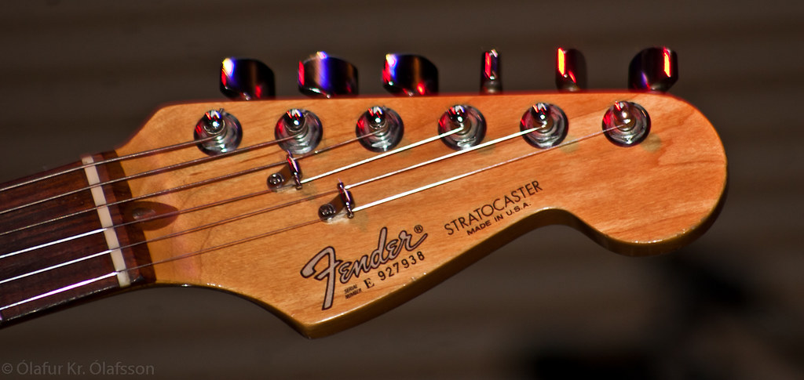
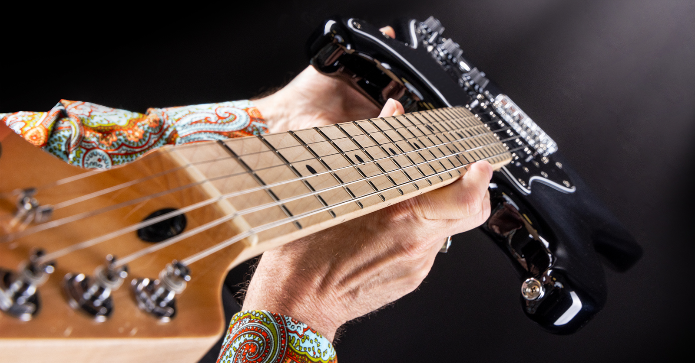
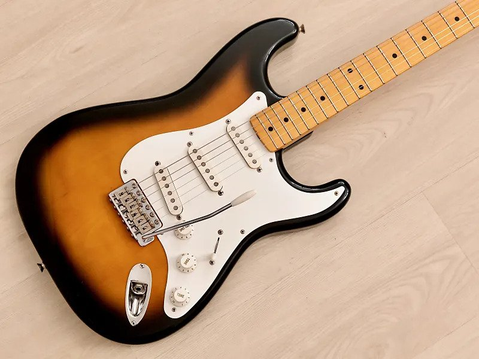

| |
Origini | Tipi | Effetti |
Composizione |
Ogni chitarra elettrica è composta da 3 principali parti, |
||
La Paletta |
|||
| La paletta è la testa della chitarra, è incollata al manico e sostiene le meccaniche dell'accordatura. |
 | ||
Il Manico |
|||
| Il manico è una parte fondamentale di ogni chitarra. |
 | ||
Il Corpo |
|||
| Il corpo può avere diverse forme a seconda della chitarra (tipi) ed è, come il manico, in legno. |
 | ||
| → vai a: "Tipi" | |||